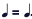
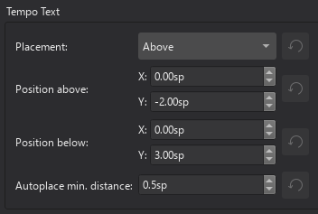

速度标记
概述
音乐术语 tempo（速度）指作品的速度或节奏快慢。音乐家使用速度标记/记号来指示速度。支持的速度标记包括：
- 节拍器标记：由一个音符、一个等号和一个整数组成。

表示每分钟 80 个二分音符（half note）。

表示每分钟 80 个四分音符（crotchet）。 * 文字速度指示：Andante、Allegro、"a tempo"、"tempo primo" 等。 * 速度变化线：由一个文本和一条虚线组成。包括 "accel."、"allarg."、"rall." 和 "rit."。 * 节拍换拍：

Musescore 的合成器根据两个设置来确定节奏：
- 乐谱真实的书面速度。它只由乐谱上的速度标记决定。章节分隔和小节线不会重置任何内容。 如果乐谱上没有速度标记，它会以 ♩ = 120（一分钟 120 个四分音符）播放。
- 临时改变节奏的控制滑块，用于监听目的。请参阅播放面板章节。
音乐家使用速度标记来表示一拍的值，但 Musescore 不使用速度标记中的拍信息。拍信息仅从拍号获得。
速度标记是Musescore 文本，但速度变化线是包含文本的Musescore 线条，请参阅文本和其它线条章节。
属性面板和播放面板使用一个特殊单位 "BPM"。"BPM" 是一分钟内四分音符数量的十进制数值。它与音乐节拍无关。它不是节拍器标记或乐谱上惯用的整数。
使用节拍器标记和节拍换拍
默认情况下，只有在使用音符和附点专业字形时，播放才遵循书写内容。用户也可以使用覆盖设置。
使用速度变化线
速度沿对象锚定范围变化，请参阅其它线条章节。
Musescore 不理解书写内容。这些项具有预定义速度设置。在 Musescore 4.2 beta 的速度面板中，默认情况下：
- accel.：逐渐加速到原速度的 133%
- allarg.：逐渐减速到原速度的 75%。意大利语 allargando 意为"放宽"。
- rall.：逐渐减速到原速度的 75%
- rit.：逐渐减速到原速度的 75%
该设置可以更改，请参阅"更改播放"部分。
使用文字速度指示
Musescore 不理解书写内容。在 Musescore 4.2 beta 的速度面板中，默认情况下：
- "a tempo" 项：将速度改回任何速度变化线更改之前的最新速度。
- tempo primo 项：将速度改回第一个有效标记所指示的速度。
- 其他文字速度指示项具有预定义速度设置。
所有这些设置都可以更改，请参阅"更改播放"部分。
向乐谱添加速度标记
所有标记都在速度面板中，请参阅使用面板章节。
速度标记影响乐谱上所有谱表的播放。
新的速度变化线定位在谱表顶部，就像谱表文本一样。它只出现在"完整乐谱"和包含该谱表的"分谱"中。所有其他新的速度标记定位在系统顶部，就像系统文本一样。系统是一个排版术语，请参阅页面排版概念章节）。
要向乐谱添加节拍器标记、文字速度指示或节拍换拍，请使用以下方法之一：
- 选择一个音符/休止符并单击面板中的一个项目。
- 将项目从面板拖到音符/休止符上。
- 从菜单栏中选择 添加→文本，并单击速度标记。
- 另请参阅外部链接，了解使用第三方字体的替代方法。
要添加使用拍号拍信息确定合适音符时值的节拍器标记：
- 选择一个音符/休止符并按键盘快捷键 Alt+Shift+T。
要添加速度变化线，请使用其它线条：应用线条章节中说明的方法。一种常见的方法是将其添加到选中的范围：
- 或者 * 选择一个音符或休止符，以创建具有"谱表文本线"行为的速度对象，或 * 选择一个小节，以创建具有"系统文本线"行为的速度对象；
- Shift+单击最后一个。
- 单击面板中的一个项目。
更改外观
播放可以配置为遵循节拍器标记和节拍换拍的书写内容。Musescore 只理解音符和附点专业字形。不要从其他程序或互联网复制或使用 Unicode 字符。附点不是计算机键盘上的"句号/点号"。
其他字符和数字是普通字符，使用（在）计算机键盘输入。它们具有不同的格式行为，例如更改属性面板：字体不会影响字形，请参阅 musescore 3 手册字体章节。另请参阅文本的输入与编辑章节。
添加普通字符
- 选择一个对象。
- 进入编辑模式（双击）
- 输入文本。
添加专业字形
- 选择一个对象。
- 进入编辑模式（双击）。
- 使用特殊字符窗口：常用符号选项卡，打开窗口的一种方法是按 Shift+F2
速度变化线
速度变化线是Musescore 线条。要更改虚线的外观，请参阅其它线条：线条属性和直接调整元素：更改线条范围章节。
更改播放
节拍器标记、节拍换拍和文字速度指示
要更改预定义速度设置：
要分配手动/覆盖速度设置：
- 选择对象
- 打开属性面板
- 在速度、A Tempo 或 Tempo primo 部分下，单击更改： * 遵循书写速度：取消勾选以忽略乐谱上的书写内容 * 设置特定速度：勾选以忽略乐谱上的书写内容
- 在覆盖书写速度中输入一个值，此值使用特殊 BPM 单位，请参阅概述。
速度变化线

要更改手动速度设置：
- 选择对象
- 打开属性面板
- 单击播放，根据需要更改：
* 幅度：目标速度占原速度的百分比。100% 表示无变化。
* 缓动方法：速度变化率，选项有
- 常规：从开始到结束变化率相同的线性过渡效果
- 缓入：开始时变化率慢、结束时变化率快的过渡效果
- 缓出：开始时变化率快、结束时变化率慢的过渡效果
速度变化线是Musescore 线条。速度沿对象锚定范围变化。要更改范围，请参阅其它线条：线条属性和直接调整元素：更改线条范围章节。
在其他谱表上重复速度标记
速度标记的排版和默认定位取决于它的添加方式，请参阅"向乐谱添加速度标记"部分。
对于行为类似"系统文本"或"系统文本线"的速度标记，有一种镜像该对象的特殊方法，请参阅谱表文本、系统文本和表情文本：在其他谱表上重复系统文本章节。
速度属性
乐谱上选中的速度标记可以使用属性面板编辑，设置已在本章其他部分介绍。属性面板：字体属性影响普通字符，但不影响专业字形。专业字形使用"音乐符号字体"，请参阅"速度样式"部分。与文本相关的设置在格式化文本章节中介绍。与线条相关的设置在其它线条章节中介绍。
要编辑整个乐谱范围的设置，请参阅"速度样式"部分。
速度样式
请参阅主章节模板和样式
- "音乐符号字体"的值可以在 格式→样式→乐谱 中编辑。
- "速度文本样式"的值可以在 格式→样式→速度文本 中编辑。
- "速度内文本样式"的值可以在 格式→样式→文本样式→速度 中编辑
- "渐变速内文本样式"的值可以在 格式→样式→文本样式→渐变速 中编辑
- "节拍器文本样式"的值可以在 格式→样式→文本样式→节拍器 中编辑。默认情况下没有对象使用此配置文件，其用途是为同时具有文字指示部分和节拍器标记部分的速度标记设置样式。通常节拍器标记部分不加粗且稍小。来源：https://github.com/musescore/MuseScore/issues/13377#issuecomment-147399…

外部链接
- github "a tempo" https://github.com/musescore/MuseScore/pull/15563
- 使用 Florian Kretlow 的 "Metrico" 字体创建高级节拍换拍文本，PSA：如果你想编写复杂的节拍换拍，请查看 Florian Kretlow 制作的这个出色字体！